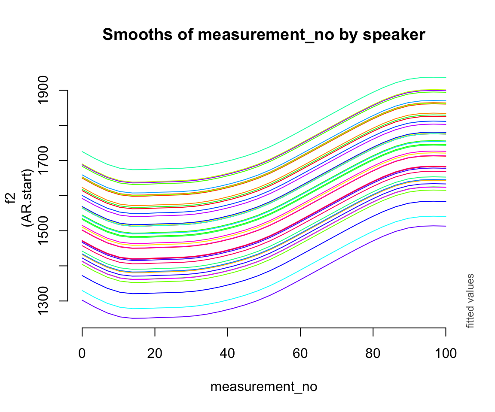
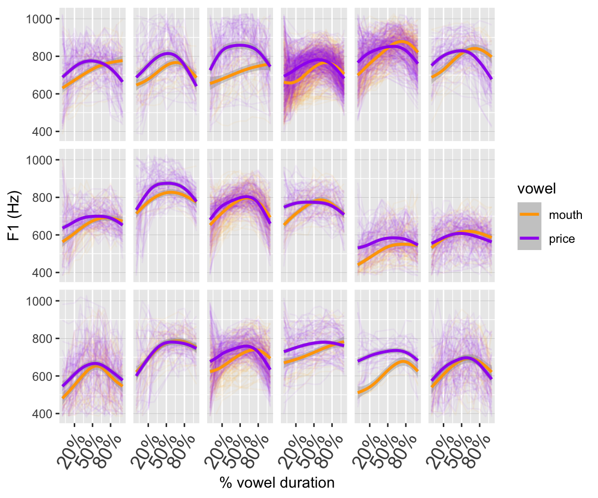

library(tidyverse)
library(mgcv)
library(itsadug)
library(gratia)
library(ggeffects)
library(patchwork)11 Generalized additive mixed-effects models (GAMMs)
This chapter was primarily written by Márton Sóskuthy, with some editing and additions by Morgan Sonderegger. It covers topics from:
- Sóskuthy (2017), pp. 9-19, 27-42
- Sóskuthy (2021), pp. 6-9, 18-20 (especially p. 19 recommendations)
- Noam Ross’ GAM course: Chap. 3
It also refers to the “Day 1” slides from Sóskuthy’s Dec. 2024 GAMMs workshop, available here.
However, because this chapter’s topics are mostly on the practical side, we’ll be working primarily with this lab without accompanying slides. The tutorials by Sóskuthy and by Martijn Wieiling provide excellent coverage of topics covered here.
Topics:
- Generalized Additive Mixed-effects Models (GAMMs)
11.1 Preliminaries
Load libraries we’ll need. Most are the same as Chapter 10:
New library for today, which we’ll use to expand our repertoire of plotting tools beyond itsadug (motivated in Section 10.4.2): gratia (Simpson 2024).
- “Graceful ‘ggplot’-based graphics and utility functions for working with generalized additive models (GAMs) fitted using the ‘mgcv’ package.”
Import the price_bin data from last time, as well as two new versions of this data that we’ll need below.
price_bin <- readRDS(file = url("https://osf.io/download/vs6jk/"))
pm_young <- readRDS(file = url("https://osf.io/download/xw7va/"))
price_cont <- readRDS(file = url("https://osf.io/download/t3udn/"))
## you can also download these files from Piazza, and
## load them in from the current directory, e.g.
# price_bin <- readRDS("price_bin.rds")Re-do code from last chapter:
- Code new factor needed for a model with a difference smooth for
age - Fit a first model to the New Zealand diphthong data (
price_bin) to determinerho_estfor fitting an AR1 model next.
## needed to fit a model with a difference smooth
price_bin$age_o <- as.ordered(price_bin$age)
contrasts(price_bin$age_o) <- "contr.treatment"
## needed to fit the AR1 model
price_bin <- price_bin %>%
group_by(id) %>%
mutate(traj_start=measurement_no == min(measurement_no)) %>%
ungroup()
## model with difference smooth
price_bin_gam <-
bam(
f2 ~ age_o +
s(measurement_no, bs = "cr", k = 11) +
s(measurement_no, bs = "cr", k = 11, by = age_o),
data = price_bin
)
rho_est <- start_value_rho(price_bin_gam)11.2 Random effects
Important practical note: factors used in GAMM models for random effects need to be coded as factors. Otherwise you’ll get an opaque error, like
Error in `names(dat) <- object$term`:! 'names' attribute [1]
must be the same length as the vector [0]". Try fitting this model:
bam(f2 ~ age_o +
s(measurement_no, bs="cr", k=11) +
s(measurement_no, bs="cr", k=11, by=age_o) +
s(speaker, bs="re"),
data=price_bin,
AR.start=traj_start, rho=rho_est)The issue is that speaker is by default coded as a character vector when the price_bin data was imported, rather than a factor. Because this is now the default behavior in R by functions for data import (e.g. read.csv()), this issue comes up often.
Now: here’s how you can specify the three different types of random effects in a GAMM, exemplified using the New Zealand diphthong data.
11.2.1 Random intercepts
price_bin$speaker_f <- factor(price_bin$speaker)
price_bin_gam_rint <- bam(f2 ~ age_o +
s(measurement_no, bs="cr", k=11) +
s(measurement_no, bs="cr", k=11, by=age_o) +
s(speaker_f, bs="re"),
data=price_bin,
AR.start=traj_start, rho=rho_est)Predicted effect of measurement_no for each age group:
plot_smooth(price_bin_gam_rint, view="measurement_no", plot_all="age_o", rm.ranef=T,print.summary = FALSE)(Note the print.summary option here, to get rid of all the usual output that accompanies plot_smooth().)
11.2.2 Random slopes
Fit a model with by-speaker random intercepts and a random slope of measurement_no.
price_bin_gam_rslope <- bam(f2 ~ age_o +
s(measurement_no, bs="cr", k=11) +
s(measurement_no, bs="cr", k=11, by=age_o) +
s(speaker_f, bs="re") + s(speaker_f, measurement_no, bs="re"),
data=price_bin,
AR.start=traj_start, rho=rho_est)Predicted effect of measurement_no for each age group:
plot_smooth(price_bin_gam_rslope, view="measurement_no", plot_all="age_o", rm.ranef=T)
## Summary:
## * age_o : factor; set to the value(s): older, younger.
## * measurement_no : numeric predictor; with 30 values ranging from 0.000000 to 100.000000.
## * speaker_f : factor; set to the value(s): s-282. (Might be canceled as random effect, check below.)
## * NOTE : The following random effects columns are canceled: s(speaker_f),s(speaker_f,measurement_no)
## Important: it is usually not a good idea to use random slopes instead of random smooths!1
However, you do often need random slope terms in GAMMs for parametric effects. These are equivalent to, and just as important as, random slope terms in GLMMS. For example, to allow the effect of age_o to differ by word, we’d include the term `s(wordform, age_o, bs = ‘re’).
11.2.3 Random smooths
Fit a model with a by-speaker random smooth for measurement_no:
price_bin_gam_rsmooth <- bam(f2 ~ age_o +
s(measurement_no, bs="cr", k=11) +
s(measurement_no, bs="cr", k=11, by=age_o) +
s(measurement_no, speaker_f, bs="fs", m=1, k=11),
data=price_bin,
AR.start=traj_start, rho=rho_est)
## Warning in gam.side(sm, X, tol = .Machine$double.eps^0.5): model has repeated
## 1-d smooths of same variable.Predicted effect:
plot_smooth(price_bin_gam_rsmooth, view="measurement_no", plot_all="age_o", rm.ranef=T)
## Summary:
## * age_o : factor; set to the value(s): older, younger.
## * measurement_no : numeric predictor; with 30 values ranging from 0.000000 to 100.000000.
## * speaker_f : factor; set to the value(s): s-282. (Might be canceled as random effect, check below.)
## * NOTE : The following random effects columns are canceled: s(measurement_no,speaker_f)
## This model takes a while to fit. There is a more efficient implementation of the bam() function that you can enable by setting the value of the discrete parameter to TRUE:
price_bin_gam_rsmooth_2 <- bam(f2 ~ age_o +
s(measurement_no, bs="cr", k=11) +
s(measurement_no, bs="cr", k=11, by=age_o) +
s(measurement_no, speaker_f, bs="fs", m=1, k=11),
data=price_bin,
AR.start=traj_start, rho=rho_est,
discrete=T)
## Warning in gam.side(sm, X, tol = .Machine$double.eps^0.5): model has repeated
## 1-d smooths of same variable.plot_smooth(price_bin_gam_rsmooth_2, view="measurement_no", plot_all="age_o", rm.ranef=T)
## Summary:
## * age_o : factor; set to the value(s): older, younger.
## * measurement_no : numeric predictor; with 30 values ranging from 0.000000 to 100.000000.
## * speaker_f : factor; set to the value(s): s-282. (Might be canceled as random effect, check below.)
## * NOTE : The following random effects columns are canceled: s(measurement_no,speaker_f)
## Setting discrete = TRUE is usually a good approximation to the slower model fitted with the default (discrete = FALSE), but technically this should be checked before reporting your final model.
Model summary:
summary(price_bin_gam_rsmooth)
##
## Family: gaussian
## Link function: identity
##
## Formula:
## f2 ~ age_o + s(measurement_no, bs = "cr", k = 11) + s(measurement_no,
## bs = "cr", k = 11, by = age_o) + s(measurement_no, speaker_f,
## bs = "fs", m = 1, k = 11)
##
## Parametric coefficients:
## Estimate Std. Error t value Pr(>|t|)
## (Intercept) 1586.50 25.68 61.783 < 2e-16 ***
## age_oyounger -159.59 36.38 -4.387 1.15e-05 ***
## ---
## Signif. codes: 0 '***' 0.001 '**' 0.01 '*' 0.05 '.' 0.1 ' ' 1
##
## Approximate significance of smooth terms:
## edf Ref.df F p-value
## s(measurement_no) 7.994 8.215 25.38 <2e-16 ***
## s(measurement_no):age_oyounger 5.316 5.611 11.72 <2e-16 ***
## s(measurement_no,speaker_f) 345.533 436.000 14.11 <2e-16 ***
## ---
## Signif. codes: 0 '***' 0.001 '**' 0.01 '*' 0.05 '.' 0.1 ' ' 1
##
## R-sq.(adj) = 0.46 Deviance explained = 46.4%
## fREML = 3.0204e+05 Scale est. = 34633 n = 4741911.2.4 By-speaker predictions
Plots of the predicted measurement_no effect by speaker for each model, not accounting for age_o. This will give us a sense of what different random effect structures do.
(To make these properly, the model predictions would ned to account for each speaker’s age. I leave this as an exercise.)
Random intercept:
plot_smooth(price_bin_gam_rint, view = "measurement_no",
cond = list(speaker_f = unique(price_bin$speaker_f)),
plot_all = "speaker_f",
rm.ranef = FALSE, se = 0, legend_plot = FALSE,
main = "Smooths of measurement_no by speaker")
## Warning in plot_smooth(price_bin_gam_rint, view = "measurement_no", cond =
## list(speaker_f = unique(price_bin$speaker_f)), : speaker_f in cond and in
## plot_all. Not all levels are being plotted.
## Summary:
## * age_o : factor; set to the value(s): older.
## * measurement_no : numeric predictor; with 30 values ranging from 0.000000 to 100.000000.
## * speaker_f : factor with 40 values; set to the value(s): s-101, s-104, s-133, s-134, s-140, s-141, s-170, s-171, s-180, s-2, ...
Random intercept + slope:
plot_smooth(price_bin_gam_rslope, view = "measurement_no",
cond = list(speaker_f = unique(price_bin$speaker_f)),
plot_all = "speaker_f",
rm.ranef = FALSE, se = 0, legend_plot = FALSE,
main = "Smooths of measurement_no by speaker")
## Warning in plot_smooth(price_bin_gam_rslope, view = "measurement_no", cond =
## list(speaker_f = unique(price_bin$speaker_f)), : speaker_f in cond and in
## plot_all. Not all levels are being plotted.
## Summary:
## * age_o : factor; set to the value(s): older.
## * measurement_no : numeric predictor; with 30 values ranging from 0.000000 to 100.000000.
## * speaker_f : factor with 40 values; set to the value(s): s-101, s-104, s-133, s-134, s-140, s-141, s-170, s-171, s-180, s-2, ...Random smooths:
plot_smooth(price_bin_gam_rsmooth, view = "measurement_no",
cond = list(speaker_f = unique(price_bin$speaker_f)),
plot_all = "speaker_f",
rm.ranef = FALSE, se = 0, legend_plot = FALSE,
main = "Smooths of measurement_no by speaker")
## Warning in plot_smooth(price_bin_gam_rsmooth, view = "measurement_no", cond =
## list(speaker_f = unique(price_bin$speaker_f)), : speaker_f in cond and in
## plot_all. Not all levels are being plotted.
## Summary:
## * age_o : factor; set to the value(s): older.
## * measurement_no : numeric predictor; with 30 values ranging from 0.000000 to 100.000000.
## * speaker_f : factor with 40 values; set to the value(s): s-101, s-104, s-133, s-134, s-140, s-141, s-170, s-171, s-180, s-2, ...It can also be useful to inspect the random effects themselves. Here are just the random smooths, using inspect_random() from itsadug:
inspect_random(price_bin_gam_rsmooth, select=3)
## Summary:
## * measurement_no : numeric predictor; with 30 values ranging from 0.000000 to 100.000000.
## * speaker_f : factor with 40 values; set to the value(s): s-101, s-104, s-133, s-134, s-140, s-141, s-170, s-171, s-180, s-2, ...(select = 3 picks out the third smooth in the model – you can find the correct number by counting from the top of the smooth estimates part of the model summary; the random smooths are the third smooth for this specific model.)
11.2.5 Comparison
Here’s what the predicted effect looks like for all five models:
Exercise 11.1 (Interpretation)
Consider the three by-speaker prediction plots above. How do they differ?
How do these differences result from the three models’ different random effect structures?
Consider the predicted
measurement_noeffect for the five models:
What differences do you see?
- What do you think it means here that adding any random effect makes so much difference, but it doesn’t matter much what kind of random effect?
Exercise 11.2 (Adding random smooths for previous / following environment) There are two variables in the data set that code the previous and following phone. Here’s what they look like:
table(price_bin$previous)
##
## _ b d f g h J k l m n none p P r
## 63 33 1056 630 2929 369 1035 968 776 8172 2870 4043 1639 708 10 7294
## s S t T v w z
## 2068 71 5859 20 308 6458 40
table(price_bin$following)
##
## _ { @ 5 b d D e f g h i
## 63 41 66 1932 31 145 4152 246 22 967 21 117 51
## I k l m n none p Q r s t v w
## 500 5902 2756 4743 5342 3093 273 30 250 2115 10823 2458 10
## z
## 1270We typically use random effects for full words (or items / stimuli) rather than previous / following environment, but there are simply too many unique words in this data set, and specifying previous / following environments achieves essentially the same goal (see Sonderegger (2023), Sec. 10.2.1 for explanation in the context of mixed-effects models). Your task is to set up separate random smooths for both and add them to your model.
Fit this model. (Remember: the grouping variable for random smooths must be a factor!)
Does this change affect your model output?
Use
inspect_smooth()to look at the previous / following smooths. If you know a bit about phonetics: do these smooths look the way you’d expect them to?
11.2.6 Random reference-difference smooths
Sóskuthy (2021) points out that for \(p\)-values and SEs of smooths for an “average speaker” (or average word, etc.) to be correctly calculated, we need a random slope equivalent for the within-speaker following voiceless effect, i.e. a random effect that allows the shape of the following voiceless effect to vary within speakers. Sóskuthy calls this a “reference-difference smooth”.
This sounds complicated, but it’s directly analagous to how we use random slopes in GLMMs. If we want a correct estimate of predictor \(x\), which is a factor with two levels, and the effect of \(x\) can (conceptually) vary between speakers, then we need a term that allows speakers to vary in this way—this is the by-speaker random slope of \(x\).
Add a reference-difference smooth to our example:
price_bin$foll_v_o <- as.ordered(price_bin$following_voiceless)
contrasts(price_bin$foll_v_o) <- "contr.treatment"
price_bin_gam_fv_rs <- bam(f2 ~ foll_v_o +
s(measurement_no, bs="cr", k=11) +
s(measurement_no, bs="cr", k=11, by=foll_v_o) +
s(measurement_no, speaker_f, bs="fs", m=1, k=11) +
s(measurement_no, speaker_f, by=foll_v_o, bs="fs", m=1, k=11),
data=price_bin,
AR.start=traj_start, rho=rho_est,
discrete=T)
## Warning in gam.side(sm, X, tol = .Machine$double.eps^0.5): model has repeated
## 1-d smooths of same variable.Model summary:
summary(price_bin_gam_fv_rs)
##
## Family: gaussian
## Link function: identity
##
## Formula:
## f2 ~ foll_v_o + s(measurement_no, bs = "cr", k = 11) + s(measurement_no,
## bs = "cr", k = 11, by = foll_v_o) + s(measurement_no, speaker_f,
## bs = "fs", m = 1, k = 11) + s(measurement_no, speaker_f,
## by = foll_v_o, bs = "fs", m = 1, k = 11)
##
## Parametric coefficients:
## Estimate Std. Error t value Pr(>|t|)
## (Intercept) 1492.963 22.242 67.125 < 2e-16 ***
## foll_v_oTRUE 31.042 8.594 3.612 0.000304 ***
## ---
## Signif. codes: 0 '***' 0.001 '**' 0.01 '*' 0.05 '.' 0.1 ' ' 1
##
## Approximate significance of smooth terms:
## edf Ref.df F p-value
## s(measurement_no) 8.749 8.947 69.703 <2e-16 ***
## s(measurement_no):foll_v_oTRUE 6.852 7.599 25.850 <2e-16 ***
## s(measurement_no,speaker_f) 350.158 438.000 12.222 <2e-16 ***
## s(measurement_no,speaker_f):foll_v_oTRUE 216.850 426.000 1.524 <2e-16 ***
## ---
## Signif. codes: 0 '***' 0.001 '**' 0.01 '*' 0.05 '.' 0.1 ' ' 1
##
## R-sq.(adj) = 0.487 Deviance explained = 49.3%
## fREML = 3.0159e+05 Scale est. = 33655 n = 47419And a plot of the two smooths.
plot_smooth(price_bin_gam_fv_rs, view="measurement_no",
plot_all="foll_v_o", rm.ranef=T)
## Summary:
## * foll_v_o : factor; set to the value(s): FALSE, TRUE.
## * measurement_no : numeric predictor; with 30 values ranging from 0.000000 to 100.000000.
## * speaker_f : factor; set to the value(s): s-282. (Might be canceled as random effect, check below.)
## * NOTE : The following random effects columns are canceled: s(measurement_no,speaker_f),s(measurement_no,speaker_f):foll_v_oTRUE
##
Broader context
You may notice something slightly odd about the plotted smooths: the confidence interval around the second one (following voiceless = TRUE) is a bit wider than the confidence interval around the first one. This is a known issue with plots of models with reference-difference smooths, which Morgan thinks is related to the fact that there are no correlations between different random-effect terms included in GAMMs (unlike GLMMs). Based on the simulations in Sóskuthy (2021), the model estimates should be OK – so this is likely an issue with the prediction function for GAMMs.
11.3 Extended example: F1 in PRICE vs. MOUTH
We now look at a data set that has F1 measurements for the PRICE and MOUTH vowels for 18 younger New Zealand English speakers. Here’s what the data look like:
ggplot(pm_young, aes(x=measurement_no, y=f1, col=vowel)) +
facet_wrap(~speaker, nrow=3) +
geom_line(aes(group=id), alpha=0.05) +
geom_smooth() +
xlab("% vowel duration") +
ylab("F1 (Hz)") +
scale_colour_manual(values=c("orange","purple")) +
scale_x_continuous(breaks=seq(20,80,30),
labels=paste0(seq(20,80,30), "%")) +
theme(axis.text.x=element_text(size=14,angle=60, hjust=1),
strip.text=element_blank(),
panel.grid.major.y=element_line(linewidth=0.1, colour="grey"))
## `geom_smooth()` using method = 'gam' and formula = 'y ~ s(x, bs = "cs")'
(Note again: these smoothers are GAMs!)
Our goal is to find out whether the F1 trajectories for PRICE and MOUTH are reliably different. Traditional descriptions would have these vowels as /aI/ and /aU/ (I and U = lax i and u) – but that’s not what they look like due to changes that have occurred in NZE. Do those changes mean that the F1 trajectories are also now different (again, the traditional descriptions of /aI/ and /aU/ would imply essentially identical F1 trajectories).
Exercise 11.3
Fit a GAMM to the F1 data that tests for differences between PRICE and MOUTH. The model should also have appropriate random effects and autocorrelation handling.
Once you have a model, use plotting and the model summaries to make sense of the results.
Extra: Make your model also account for by-word variability (each
wordformhas a unique value ofvowel) using appropriate random effect terms. This model will take significantly longer to fit.2
Note: This is an open ended task, and you’ll have ~15 minutes to complete it (meaning, parts (a)–(b)). That’s not a lot of time, but should be enough to get you started. Don’t worry if you can’t finish the exercise: we will work through it together. This exercise sets the scene for the discussion that will follow.
Solution
Data processing:
pm_young$speaker_f <- factor(pm_young$speaker)
pm_young$vowel_ord <- as.ordered(pm_young$vowel)
contrasts(pm_young$vowel_ord) <- "contr.treatment"
pm_young <- pm_young %>%
group_by(id) %>%
mutate(traj_start = measurement_no == min(measurement_no)) %>%
ungroup()Fit model:
# step 1: fit model to find autocorrelation at lag 1
pm_gam_noAR <- bam(f1 ~ vowel_ord +
s(measurement_no, bs="cr", k=11) +
s(measurement_no, bs="cr", k=11, by=vowel_ord) +
s(measurement_no, speaker_f, bs="fs", m=1, k=11) +
s(measurement_no, speaker_f, by=vowel_ord, bs="fs", m=1, k=11),
data=pm_young,
discrete=T)
## Warning in gam.side(sm, X, tol = .Machine$double.eps^0.5): model has repeated
## 1-d smooths of same variable.
# step 2: find autocorrelation
rho_est <- start_value_rho(pm_gam_noAR)
# step 3: fit final model
pm_gam_AR <- bam(f1 ~ vowel_ord +
s(measurement_no, bs="cr", k=11) +
s(measurement_no, bs="cr", k=11, by=vowel_ord) +
s(measurement_no, speaker_f, bs="fs", m=1, k=11) +
s(measurement_no, speaker_f, by=vowel_ord, bs="fs", m=1, k=11),
data=pm_young,
AR.start=pm_young$traj_start, rho=rho_est,
discrete=T)
## Warning in gam.side(sm, X, tol = .Machine$double.eps^0.5): model has repeated
## 1-d smooths of same variable.Summary and visualization:
summary(pm_gam_AR)
##
## Family: gaussian
## Link function: identity
##
## Formula:
## f1 ~ vowel_ord + s(measurement_no, bs = "cr", k = 11) + s(measurement_no,
## bs = "cr", k = 11, by = vowel_ord) + s(measurement_no, speaker_f,
## bs = "fs", m = 1, k = 11) + s(measurement_no, speaker_f,
## by = vowel_ord, bs = "fs", m = 1, k = 11)
##
## Parametric coefficients:
## Estimate Std. Error t value Pr(>|t|)
## (Intercept) 694.634 18.543 37.460 < 2e-16 ***
## vowel_ordprice 25.687 6.199 4.144 3.43e-05 ***
## ---
## Signif. codes: 0 '***' 0.001 '**' 0.01 '*' 0.05 '.' 0.1 ' ' 1
##
## Approximate significance of smooth terms:
## edf Ref.df F p-value
## s(measurement_no) 7.773 8.315 62.884 <2e-16 ***
## s(measurement_no):vowel_ordprice 6.010 6.926 23.241 <2e-16 ***
## s(measurement_no,speaker_f) 113.024 198.000 17.288 <2e-16 ***
## s(measurement_no,speaker_f):vowel_ordprice 83.581 197.000 1.232 <2e-16 ***
## ---
## Signif. codes: 0 '***' 0.001 '**' 0.01 '*' 0.05 '.' 0.1 ' ' 1
##
## R-sq.(adj) = 0.491 Deviance explained = 49.5%
## fREML = 1.5997e+05 Scale est. = 5785.7 n = 28890
plot_smooth(pm_gam_AR, view="measurement_no", plot_all="vowel_ord", rm.ranef=T)
## Summary:
## * vowel_ord : factor; set to the value(s): mouth, price.
## * measurement_no : numeric predictor; with 30 values ranging from 0.000000 to 100.000000.
## * speaker_f : factor; set to the value(s): s-170. (Might be canceled as random effect, check below.)
## * NOTE : The following random effects columns are canceled: s(measurement_no,speaker_f),s(measurement_no,speaker_f):vowel_ordprice
## 
11.4 Significance testing in GAMMs
So how do we know if we have a significant effect of vowel in this model? There are a few things we can do:
- Look at the parametric difference term for
vowel_ord; that will tell us about any height differences. - Look at the smooth difference term for
vowel_ord; that will tell us about any shape differences. - Fit the model with a so-called binary difference term. That actually corresponds to a simultaneous test of height and shape, which is nice if we don’t have separate predictions about those!
- Perform a model comparison between models with and without all terms involving
vowel_ord; that also corresponds to a simultaneous effect of height and shape, and takes by-speaker differences into account. - Look at the difference smooth & associated confidence interval.
Here’s option (3):
pm_young$vowel_bin <- as.numeric(pm_young$vowel == "price")
pm_gam_bin_AR <- bam(f1 ~ s(measurement_no, bs="cr", k=11) +
s(measurement_no, bs="cr", k=11, by=vowel_bin) +
s(measurement_no, speaker_f, bs="fs", m=1, k=11) +
s(measurement_no, speaker_f, by=vowel_bin, bs="fs", m=1, k=11),
data=pm_young,
AR.start=pm_young$traj_start, rho=rho_est,
discrete=T)
## Warning in gam.side(sm, X, tol = .Machine$double.eps^0.5): model has repeated
## 1-d smooths of same variable.
summary(pm_gam_bin_AR)
##
## Family: gaussian
## Link function: identity
##
## Formula:
## f1 ~ s(measurement_no, bs = "cr", k = 11) + s(measurement_no,
## bs = "cr", k = 11, by = vowel_bin) + s(measurement_no, speaker_f,
## bs = "fs", m = 1, k = 11) + s(measurement_no, speaker_f,
## by = vowel_bin, bs = "fs", m = 1, k = 11)
##
## Parametric coefficients:
## Estimate Std. Error t value Pr(>|t|)
## (Intercept) 694.63 18.54 37.46 <2e-16 ***
## ---
## Signif. codes: 0 '***' 0.001 '**' 0.01 '*' 0.05 '.' 0.1 ' ' 1
##
## Approximate significance of smooth terms:
## edf Ref.df F p-value
## s(measurement_no) 7.773 8.315 62.884 < 2e-16 ***
## s(measurement_no):vowel_bin 7.010 7.926 22.298 < 2e-16 ***
## s(measurement_no,speaker_f) 113.024 197.000 18.022 < 2e-16 ***
## s(measurement_no,speaker_f):vowel_bin 83.581 196.000 1.326 8.84e-05 ***
## ---
## Signif. codes: 0 '***' 0.001 '**' 0.01 '*' 0.05 '.' 0.1 ' ' 1
##
## R-sq.(adj) = 0.491 Deviance explained = 49.5%
## fREML = 1.5997e+05 Scale est. = 5785.7 n = 28890
plot_smooth(pm_gam_bin_AR, view="measurement_no", plot_all="vowel_bin", rm.ranef=T)
## Warning in plot_smooth(pm_gam_bin_AR, view = "measurement_no", plot_all =
## "vowel_bin", : Predictor vowel_bin is not a factor.
## Summary:
## * measurement_no : numeric predictor; with 30 values ranging from 0.000000 to 100.000000.
## * vowel_bin : numeric predictor; set to the value(s): 0, 1.
## * speaker_f : factor; set to the value(s): s-170. (Might be canceled as random effect, check below.)
## * NOTE : The following random effects columns are canceled: s(measurement_no,speaker_f),s(measurement_no,speaker_f):vowel_bin
## Note that the predictions from this model are identical to those from the one with a separate parametric / smooth difference term. It’s only the way that this information is presented that’s different.
Option (4):
## model without any vowel information
pm_gam_bin_AR_1 <- bam(f1 ~ s(measurement_no, bs="cr", k=11) +
s(measurement_no, speaker_f, bs="fs", m=1, k=11),
data=pm_young,
AR.start=pm_young$traj_start, rho=rho_est,
discrete=T)
## Warning in gam.side(sm, X, tol = .Machine$double.eps^0.5): model has repeated
## 1-d smooths of same variable.
compareML(pm_gam_bin_AR_1, pm_gam_bin_AR)
## pm_gam_bin_AR_1: f1 ~ s(measurement_no, bs = "cr", k = 11) + s(measurement_no,
## speaker_f, bs = "fs", m = 1, k = 11)
##
## pm_gam_bin_AR: f1 ~ s(measurement_no, bs = "cr", k = 11) + s(measurement_no,
## bs = "cr", k = 11, by = vowel_bin) + s(measurement_no, speaker_f,
## bs = "fs", m = 1, k = 11) + s(measurement_no, speaker_f,
## by = vowel_bin, bs = "fs", m = 1, k = 11)
##
## Chi-square test of fREML scores
## -----
## Model Score Edf Difference Df p.value Sig.
## 1 pm_gam_bin_AR_1 160334.9 5
## 2 pm_gam_bin_AR 159969.4 10 365.540 5.000 < 2e-16 ***
##
## AIC difference: 773.23, model pm_gam_bin_AR has lower AIC.Option (5) (looking at difference smooth):
plot_smooth(pm_gam_AR, view="measurement_no", plot_all="vowel_ord", rm.ranef=T)
## Summary:
## * vowel_ord : factor; set to the value(s): mouth, price.
## * measurement_no : numeric predictor; with 30 values ranging from 0.000000 to 100.000000.
## * speaker_f : factor; set to the value(s): s-170. (Might be canceled as random effect, check below.)
## * NOTE : The following random effects columns are canceled: s(measurement_no,speaker_f),s(measurement_no,speaker_f):vowel_ordprice
##
plot_diff(pm_gam_AR, view="measurement_no", comp=list(vowel_ord=c("mouth","price")), rm.ranef=T)
## Summary:
## * measurement_no : numeric predictor; with 100 values ranging from 0.000000 to 100.000000.
## * speaker_f : factor; set to the value(s): s-170. (Might be canceled as random effect, check below.)
## * NOTE : The following random effects columns are canceled: s(measurement_no,speaker_f),s(measurement_no,speaker_f):vowel_ordprice
##
##
## measurement_no window(s) of significant difference(s):
## 0.000000 - 64.646465
## 90.909091 - 100.000000Exercise 11.4 Consider the model price_bin_gam_fv from Exercise 10.2.
Perform two significance tests to assess the effects of
age_oandfoll_v, using one of options (1)-(4) from above.Which predictor has a larger effect? (Or, if this isn’t possible to answer, explain why not.)
price_bin_gam_fv <-
bam(
f2 ~ foll_v_o + age_o +
s(measurement_no, bs = "cr", k = 11) +
s(measurement_no, bs = "cr", k = 11, by = age_o) +
s(measurement_no, bs = "cr", k = 11, by = foll_v_o),
data = price_bin, method = "ML"
)
price_bin_gam_fv_no_age <-
bam(
f2 ~ foll_v_o +
s(measurement_no, bs = "cr", k = 11) +
s(measurement_no, bs = "cr", k = 11, by = foll_v_o),
data = price_bin, method = "ML"
)
price_bin_gam_fv_no_fv <-
bam(
f2 ~ age_o +
s(measurement_no, bs = "cr", k = 11) +
s(measurement_no, bs = "cr", k = 11, by = age_o) +
s(measurement_no, bs = "cr", k = 11, by = foll_v_o),
data = price_bin, method = "ML"
)
compareML(price_bin_gam_fv, price_bin_gam_fv_no_age)
## price_bin_gam_fv: f2 ~ foll_v_o + age_o + s(measurement_no, bs = "cr", k = 11) +
## s(measurement_no, bs = "cr", k = 11, by = age_o) + s(measurement_no,
## bs = "cr", k = 11, by = foll_v_o)
##
## price_bin_gam_fv_no_age: f2 ~ foll_v_o + s(measurement_no, bs = "cr", k = 11) + s(measurement_no,
## bs = "cr", k = 11, by = foll_v_o)
##
## Chi-square test of ML scores
## -----
## Model Score Edf Difference Df p.value Sig.
## 1 price_bin_gam_fv_no_age 325164.1 6
## 2 price_bin_gam_fv 323355.2 9 1808.923 3.000 < 2e-16 ***
##
## AIC difference: -3622.30, model price_bin_gam_fv has lower AIC.11.4.1 Working with interactions
In this section, we return to the question of how age affects the F2 trajectory for PRICE. Previously, we tackled this issue by comparing an older and a younger group. We now turn to a continuous measure of age, i.e. year of birth (yob). But how can we test such a variable? The solution to this issue is the GAM(M) version of interactions: tensor product smooths. An interaction in a conventional regression model basically asks the following question: does variable A (e.g. age) change the effect of variable B (e.g. measurement time)? In a conventional regression model with an interaction between A and B, the slope associated with variable B can change as the value of variable A changes.
A tensor product smooths implements the same idea for smooths: the non-linear effect of variable B changes as the value of variable A changes (also non-linearly). There are three basic ways to implement this in GAM(M) formulas:
s(A, B): 2D smooth, suitable when A and B are on similar scales (e.g. latitude & longitude)- This is not commonly the case for (non-spatal) linguistic data, so tutorials for linguists tend to just consider the “tensor product” case.
- In this case, you do not need to include independent smooths
s(A)ors(B). This makes intuitive sense if you think of the spatial case—what is the meaning of “the smooth of latitude [alone]”?
te(A, B): tensor product or tensor smooth, doesn’t assume that A and B are on similar scales.- Pro: simplicity, requires less data than tensor interaction
- Disadvantage: doesn’t separate the “interaction” of A and B from their “main effects”, which is sometimes useful.
s(A) + s(B) + ti(A, B): tensor interaction or ANOVA decomposition- Pro: Decomposes “main effect” versus “interaction”
- Con: Requires more data, interpretation can get tricky when A and B participate in other terms.
What a 2D smooth means will be easier to appreciate once we look at some plots, so let’s move on for now.
Here’s a preliminary look at the data. The darker colours indicate speakers born in earlier decades; the range of years of birth spans 1900 to 1980. Note that this visualisation doesn’t tell us all that much – it’s hard to interpret it!
ggplot(price_cont, aes(x=measurement_no, y=f2, col=decade)) +
facet_wrap(~speaker_ord, nrow=4) +
geom_line(aes(group=id), alpha=0.1) +
geom_smooth() +
xlab("% vowel duration") +
ylab("F2 (Hz)") +
#scale_colour_manual(values=c("orange","purple"), guide="none") +
scale_x_continuous(breaks=seq(20,80,30),
labels=paste0(seq(20,80,30), "%")) +
theme(axis.text.x=element_text(size=14,angle=60, hjust=1),
strip.text=element_blank(),
panel.grid.major.y=element_line(size=0.1, colour="grey"))
## Warning: The `size` argument of `element_line()` is deprecated as of ggplot2 3.4.0.
## ℹ Please use the `linewidth` argument instead.
## `geom_smooth()` using method = 'gam' and formula = 'y ~ s(x, bs = "cs")'Here’s the model that we fit to this data. Here we’ve used the “tensor interaction” form:
- Smooths of
measurement_noandyobmeasure their simple effects (or “average”, “marginal” effects) - The
ti()term is the tensor product smooth, i.e. the non-linear interaction term which measures the joint effect ofmeasurement_noandyobbeyond the simple effects.
price_cont$speaker_f <- factor(price_cont$speaker)
price_cont <- price_cont %>%
group_by(id) %>%
mutate(traj_start = measurement_no == min(measurement_no)) %>%
ungroup()
price_cont_gam <-
bam(f2 ~
s(measurement_no, bs="cr", k=11) +
s(yob, bs="cr", k=11) +
ti(measurement_no, yob, bs="cr", k=c(11,11)) +
s(measurement_no, speaker_f, bs="fs", m=1, k=11),
data=price_cont,
AR.start=price_cont$traj_start, rho=0.7,
discrete=T)
summary(price_cont_gam)
##
## Family: gaussian
## Link function: identity
##
## Formula:
## f2 ~ s(measurement_no, bs = "cr", k = 11) + s(yob, bs = "cr",
## k = 11) + ti(measurement_no, yob, bs = "cr", k = c(11, 11)) +
## s(measurement_no, speaker_f, bs = "fs", m = 1, k = 11)
##
## Parametric coefficients:
## Estimate Std. Error t value Pr(>|t|)
## (Intercept) 1502.22 18.44 81.46 <2e-16 ***
## ---
## Signif. codes: 0 '***' 0.001 '**' 0.01 '*' 0.05 '.' 0.1 ' ' 1
##
## Approximate significance of smooth terms:
## edf Ref.df F p-value
## s(measurement_no) 8.928 9.152 131.524 <2e-16 ***
## s(yob) 1.499 1.504 1.850 0.291
## ti(measurement_no,yob) 26.735 29.654 3.181 <2e-16 ***
## s(measurement_no,speaker_f) 306.758 436.000 119.676 <2e-16 ***
## ---
## Signif. codes: 0 '***' 0.001 '**' 0.01 '*' 0.05 '.' 0.1 ' ' 1
##
## R-sq.(adj) = 0.481 Deviance explained = 48.4%
## fREML = 3.2595e+05 Scale est. = 33165 n = 51512The model summary suggests that there is no significant effect of year of birth alone; this means that year of birth does not make the F2 trajectory as a whole significantly lower or higher (averaging over measurement_no). However, the interaction is significant, suggesting that the shape of the trajectory changes with the year of birth of the speaker.
So what does this interaction look like? Let’s create some plots that show us how the F2 trajectory changes as a function of decade of birth in our data. Here’s how to do this with plot_smooth() from itsadug (a bit clunky)
for (n in 0:4) {
plot_smooth(price_cont_gam, view="measurement_no",
cond=list(yob=1905 + n * 17.5), rm.ranef=T, se=FALSE,
lw=2, ylim=c(1300,1750), n=100,
main=paste0("year of birth: ", 1905 + n * 17.5))
}
## Summary:
## * measurement_no : numeric predictor; with 100 values ranging from 0.000000 to 100.000000.
## * yob : numeric predictor; set to the value(s): 1905.
## * speaker_f : factor; set to the value(s): s-282. (Might be canceled as random effect, check below.)
## * NOTE : The following random effects columns are canceled: s(measurement_no,speaker_f)
##
## Summary:
## * measurement_no : numeric predictor; with 100 values ranging from 0.000000 to 100.000000.
## * yob : numeric predictor; set to the value(s): 1922.5.
## * speaker_f : factor; set to the value(s): s-282. (Might be canceled as random effect, check below.)
## * NOTE : The following random effects columns are canceled: s(measurement_no,speaker_f)
##
## Summary:
## * measurement_no : numeric predictor; with 100 values ranging from 0.000000 to 100.000000.
## * yob : numeric predictor; set to the value(s): 1940.
## * speaker_f : factor; set to the value(s): s-282. (Might be canceled as random effect, check below.)
## * NOTE : The following random effects columns are canceled: s(measurement_no,speaker_f)
##
## Summary:
## * measurement_no : numeric predictor; with 100 values ranging from 0.000000 to 100.000000.
## * yob : numeric predictor; set to the value(s): 1957.5.
## * speaker_f : factor; set to the value(s): s-282. (Might be canceled as random effect, check below.)
## * NOTE : The following random effects columns are canceled: s(measurement_no,speaker_f)
##
## Summary:
## * measurement_no : numeric predictor; with 100 values ranging from 0.000000 to 100.000000.
## * yob : numeric predictor; set to the value(s): 1975.
## * speaker_f : factor; set to the value(s): s-282. (Might be canceled as random effect, check below.)
## * NOTE : The following random effects columns are canceled: s(measurement_no,speaker_f)
## Here is a simpler way to do this using ggpredict() (from ggeffects, see Section 10.4.2):
ggpredict(price_cont_gam, terms = c("measurement_no", "yob [1900, 1920, 1940, 1960, 1980]")) %>% plot(show_ci = FALSE)Basically, the trajectory lower and changes shape over time (as yob increases).
A less intuitive, but often-used visualisation shows this as a heat map. Opinions differ on whether heat maps are:
- A natural way to visualize 2D smooths that you should learn to read (Morgan)
- A confusing way that should not be used in situations other than where the two axes have a straightforward spatial interpretation (e.g. for map data, where one axis is longitude and the other one latitude). (Márton)
Generate a heatmap using fvisgam() from itsadug, along with two plots of “slices” of the heatmap to aid interpretation:
layout(mat=matrix(c(1,1,2,3), ncol=2))
fvisgam(price_cont_gam, view=c("measurement_no","yob"), rm.ranef=T)
## Summary:
## * measurement_no : numeric predictor; with 30 values ranging from 0.000000 to 100.000000.
## * yob : numeric predictor; with 30 values ranging from 1900.000000 to 1975.000000.
## * speaker_f : factor; set to the value(s): s-282. (Might be canceled as random effect, check below.)
## * NOTE : The following random effects columns are canceled: s(measurement_no,speaker_f)
##
## Warning in gradientLegend(c(min.z, max.z), n.seg = 3, pos = 0.875, color = pal,
## : Increase right margin to fit labels or decrease the number of decimals, see
## help(gradientLegend).
abline(h=1910, lty=2, lwd=2)
abline(h=1965, lty=2, lwd=2)
par(mar=c(2.1,4.1,3.1,2.1))
plot_smooth(price_cont_gam, view="measurement_no",
cond=list(yob=1965), rm.ranef=T, se=FALSE,
lw=2, ylim=c(1300,1750), n=100)
## Summary:
## * measurement_no : numeric predictor; with 100 values ranging from 0.000000 to 100.000000.
## * yob : numeric predictor; set to the value(s): 1965.
## * speaker_f : factor; set to the value(s): s-282. (Might be canceled as random effect, check below.)
## * NOTE : The following random effects columns are canceled: s(measurement_no,speaker_f)
##
text(10, 1700, "year of birth: 1965", adj=0)
par(mar=c(5.1,4.1,0.1,2.1))
plot_smooth(price_cont_gam, view="measurement_no",
cond=list(yob=1910), rm.ranef=T, se=FALSE,
lw=2, ylim=c(1300,1750), n=100)
## Summary:
## * measurement_no : numeric predictor; with 100 values ranging from 0.000000 to 100.000000.
## * yob : numeric predictor; set to the value(s): 1910.
## * speaker_f : factor; set to the value(s): s-282. (Might be canceled as random effect, check below.)
## * NOTE : The following random effects columns are canceled: s(measurement_no,speaker_f)
##
text(10, 1700, "year of birth: 1910", adj=0)This plot shows predicted f2 as yob and measurement_no are varied. This is not the same as showing just the ti(yob, measurement_no) effect, which would look like this (using draw() from gratia):
draw(price_cont_gam, select = 3, contour = FALSE)Note that the interaction looks a little “jittery” when looked at in its entirety. This is likely the same kind of artefact that we’ve seen before for the global warming data where a period of rapid change makes periods of stability look more wiggly than they should. An adaptive smoother could potentially help:
price_cont_gam <-
bam(f2 ~
s(measurement_no, bs="cr", k=11) +
s(yob, bs="ad", k=11) +
ti(measurement_no, yob, bs="cr") +
s(measurement_no, speaker_f, bs="fs", m=1, k=11),
data=price_cont,
AR.start=price_cont$traj_start, rho=0.7,
discrete=T)
layout(mat=matrix(c(1,1,2,3), ncol=2))
fvisgam(price_cont_gam, view=c("measurement_no","yob"), rm.ranef=T)
## Summary:
## * measurement_no : numeric predictor; with 30 values ranging from 0.000000 to 100.000000.
## * yob : numeric predictor; with 30 values ranging from 1900.000000 to 1975.000000.
## * speaker_f : factor; set to the value(s): s-282. (Might be canceled as random effect, check below.)
## * NOTE : The following random effects columns are canceled: s(measurement_no,speaker_f)
##
## Warning in gradientLegend(c(min.z, max.z), n.seg = 3, pos = 0.875, color = pal,
## : Increase right margin to fit labels or decrease the number of decimals, see
## help(gradientLegend).
abline(h=1910, lty=2, lwd=2)
abline(h=1965, lty=2, lwd=2)
par(mar=c(2.1,4.1,3.1,2.1))
plot_smooth(price_cont_gam, view="measurement_no",
cond=list(yob=1965), rm.ranef=T, se=FALSE,
lw=2, ylim=c(1300,1750), n=100)
## Summary:
## * measurement_no : numeric predictor; with 100 values ranging from 0.000000 to 100.000000.
## * yob : numeric predictor; set to the value(s): 1965.
## * speaker_f : factor; set to the value(s): s-282. (Might be canceled as random effect, check below.)
## * NOTE : The following random effects columns are canceled: s(measurement_no,speaker_f)
##
text(10, 1700, "year of birth: 1965", adj=0)
par(mar=c(5.1,4.1,0.1,2.1))
plot_smooth(price_cont_gam, view="measurement_no",
cond=list(yob=1910), rm.ranef=T, se=FALSE,
lw=2, ylim=c(1300,1750), n=100)
## Summary:
## * measurement_no : numeric predictor; with 100 values ranging from 0.000000 to 100.000000.
## * yob : numeric predictor; set to the value(s): 1910.
## * speaker_f : factor; set to the value(s): s-282. (Might be canceled as random effect, check below.)
## * NOTE : The following random effects columns are canceled: s(measurement_no,speaker_f)
##
text(10, 1700, "year of birth: 1910", adj=0)Exercise 11.5
- For the
englishdata from languageR (introduced in Section 2.5.3): fit a GAM ofRTlexdecincluding:
- a 2D smooth coded using
te(notti) ofWrittenFrequencyandFamiliarity - a parametric term for
AgeSubject.
Recall that WrittenFrequency and Familiarity are highly correlated.
Visualize the 2D smooth as a heatmap using
fvisgam()Do the same using
draw()from gratia.How do these visualizations differ? In particular, what does the blank space on the
draw()heatmap mean?Does one heatmap seem preferable, given what the data looks like?
For (c) and (d), you may need to read documentation or search online / ask a chatbot (and verify its answer).
11.4.2 Extra: Custom plots & videos for GAMMs
It’s often useful to create visualizations showing how trajectory shapes change as a function of another variable. This example shows how, more generally, you can use animation to visualize effects from GAMMs.
First, we will create a series of four plots showing how trajectory shapes change as a function of year of birth (i.e., four “frames” from an animation). Second, we will show the same change as an animation.
For both options, we need to generate model predictions. For this, we first design a data frame that has the same form as the original data, with all the predictors used in our model. Once we have this data frame (called newdat here), generating the actual predictions is really straightforward. For our data frame, we’ll use four levels of year of birth as set out above.
newdat <- expand.grid(
measurement_no=0:100,
yob=c(1905, 1930, 1950, 1975),
speaker_f=levels(price_cont$speaker_f)[1]
)
preds <- predict(price_cont_gam, newdat,
exclude=c("s(measurement_no,speaker_f)"),
se.fit=T)
newdat$f2 <- preds$fit
newdat$ll <- preds$fit - 1.96*preds$se.fit
newdat$ul <- preds$fit + 1.96*preds$se.fitThis data set now has everything we need for our plot! We’ll use ggplot() to create the plot.
ggplot(newdat, aes(x=measurement_no,y=f2)) +
facet_wrap(~yob, ncol=4)+
geom_ribbon(aes(ymin=ll,ymax=ul), col=NA, fill="grey", alpha=0.5) +
geom_line() +
xlab("% vowel duration") +
ylab("F2 (Hz)") +
theme_minimal() +
theme(axis.line=element_line(),
panel.grid=element_blank())The second option is to use gganimate and create an animation for the whole time period (1900–1980). The first step (creating newdat) is actually ludicrously simple! Instead of creating 4 time slices, we create 81, all the way from 1900 to 1980.
newdat <- expand.grid(
measurement_no=0:100,
yob=1900:1980,
speaker_f=levels(price_cont$speaker_f)[1]
)
preds <- predict(price_cont_gam, newdat,
exclude="s(measurement_no,speaker_f)",
se.fit=T)
newdat$f2 <- preds$fit
newdat$ll <- preds$fit - 1.96*preds$se.fit
newdat$ul <- preds$fit + 1.96*preds$se.fitThis data set now has everything we need for our plot! We’ll use ggplot() to create the plot. (This won’t render in HTML, but copy the code into your RStudio to see the animation.)
library(gganimate)
vid <- ggplot(newdat, aes(x=measurement_no,y=f2)) +
transition_time(yob) +
ease_aes('linear') +
labs(title = 'Year of birth: {frame_time}') +
geom_ribbon(aes(ymin=ll,ymax=ul), col=NA, fill="grey", alpha=0.2) +
geom_line(lwd=2) +
xlab("% vowel duration") +
ylab("F2 (Hz)") +
theme_minimal() + #
theme(axis.line=element_line(),
panel.grid=element_blank(),
axis.text=element_text(size=18, colour="black"),
axis.title=element_text(size=18, face="bold"),
plot.title=element_text(size=18, face="bold"))
animate(vid, nframes=81, fps=12, width=600, height=450)To see why, compare the second and third by-speaker prediction plots below. Exceptions are when by-speaker differences are well-approximated as linear (= equivalent to random smooths), or it’s computationally infeasible to include random smooths and you want to at least account for some by-speaker (etc.) variability in trajectory shape.↩︎
Hint: this model should not contain an additional random smooth.↩︎